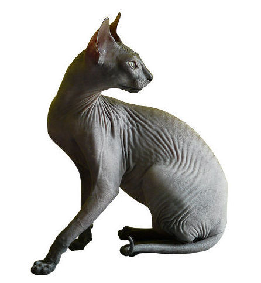

The Donskoy cat is a hairless cat with a fun personality. They are some times known as the Don Sphynx and the Russian Hairless. These cats are actually very friendly and affectionate and will come to sit on peoples laps as a sign of love.
